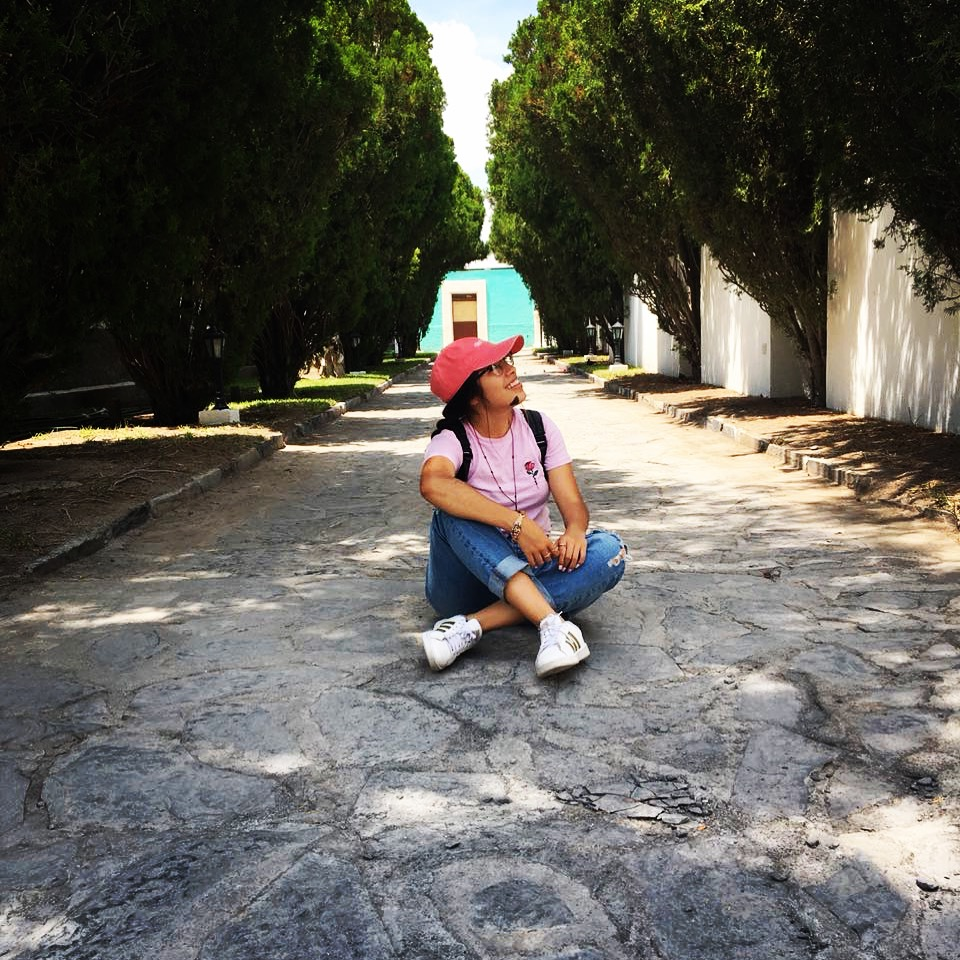

Paola Obregon Guillermo nacio el 15 de diciembre del 2000. Es originaria de Salitllo, Coahuila, Mexico. Crecio junto a 3 hermanos (1 hermana que es su gemela) y 2 hermanos mayores que ella, fue criada y educada en Mexico por su madre Felicitas Guillermo Moreno y su padre Julio Cesar Obregon Mtz. A los 13 años se mudo a Alabama donde vivio 1 año, despues regreso a Mexico donde termino la secundaria y despues se mudo a California donde vivio 1 año y medio, actualmente vive en el lugar donde nacio. Siempre ha sido una persona muy buena y emprendedora. A sus 18 años se dedica a treidiar en la Bolsa de Valores Mexica y en Forex.
Paola desde pequeña ha hecho ejercicio de todo tipo, desde ballet y gimnasia hasta natacion y tenis. Cuando era pequeña lo que mas hacia era correr a distancia desde 5km hasta 10km esto fue porque su papa siempre la empujaba a correr, a ella y a sus hermanos. Actualmente ella no lo hace tanto como debido a sus rodillas.